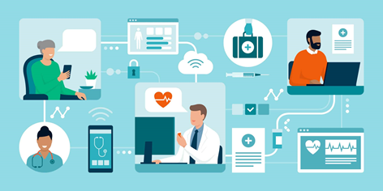
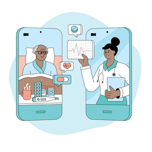
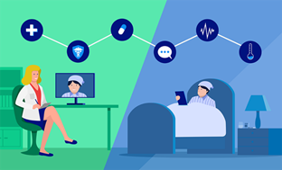
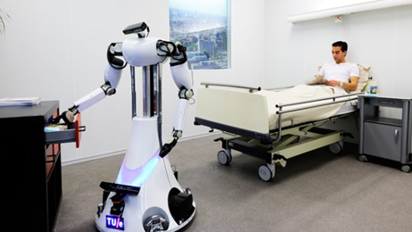
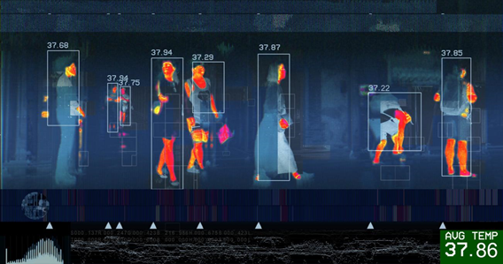
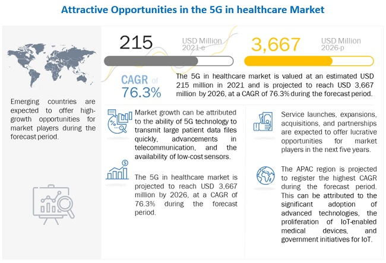

5G Telemedicine

5G technology has the characteristics of high bandwidth and low latency, and real-time high-definition audio and video and other related medical data can be transmitted between doctors and patients to achieve remote diagnosis and treatment. precision. Under the current situation of epidemic prevention and control, 5G telemedicine can make diagnosis and treatment more efficient, convenient and safe.
In the prevention and control of the COVID-19 epidemic, make full use of 5G communication technology, link all doctors and experts, actively leverage the advantages of online diagnosis and treatment, and carry out online consultation, online consultation, health science, psychological assistance counseling, and home isolation guidance , home delivery of medicines for chronic diseases and other services, enabling users to seek medical treatment at home without leaving home, reducing the risk of going out for medical treatment, and helping to fight against COVID-19.
5G Ambulance
.jpg)
5G ambulances provide on-site diagnosis, inspection, protection, treatment and on-the-road monitoring medical technical services for critically ill patients before hospital. The biggest difference between 5G ambulances and ordinary ambulances is that
they can carry out emergency treatment of new and sudden infectious diseases, so as to protect the external environment from pollution, prevent the spread of the epidemic, and complete the safe isolation and transfer of patients with major
infectious diseases. When the emergency patient gets on the 5G ambulance, the on-board doctor can use the 5G medical equipment to complete a series of data transmission tasks such as the patient's physiological parameters, blood test, electrocardiogram,
ultrasound, etc., to achieve seamless linkage between the pre-hospital and the hospital, and quickly formulate the rescue. The plan greatly shortens the rescue response time and strives for greater vitality for the patients.
5G Remote Monitoring


5G-based remote monitoring is a form of remote monitoring that uses 5G technology to assist medical monitoring, realizes real-time, continuous and long-term monitoring of patients' vital signs, and transmits the acquired vital signs data and emergency alarm information to medical staff through a 5G network.
5G remote monitoring can realize the acquisition and analysis of real-time data of patients in isolated areas. COVID-19 patients in the isolation area collect the patient's heart rate, breathing and other physical data through monitoring equipment such as smart bracelets, electrocardiographs, ventilators, sphygmomanometers, and transmit them back in real time through the 5G network. The collected patient's physical data can be processed in the background. Intelligent analysis and processing, real-time warning when abnormal data is found, and the doctor in the background can judge the condition in time according to the warning information.
5G Artificial Intelligence

The related applications of 5G artificial intelligence can effectively share the work of medical staff, alleviate the problem of insufficient medical staff, reduce cross-infection between doctors and patients, and can also boost the confidence and courage
to fight the COVID-19 epidemic. According to statistics, in the prevention and control of the COVID-19 epidemic, the 5G intelligent robots invested include: 5G cloud medical assistant robot, 5G cloud disinfection and cleaning robot, 5G patrol
temperature measurement robot, 5G medicine delivery service robot and other 5G intelligent robots. It can assist medical staff in the isolation area to complete basic work such as ward rounds, disinfection and cleaning, temperature measurement
and inspection, and drug delivery services; in addition, applications such as remote robot ultrasound and surgery in ICU wards, and smart health reminders have also played an important role during the epidemic.
5G Infrared Thermal Imaging

With the resumption of work and the sharp increase in the number of people returning home, the epidemic prevention and control situation is still severe and complicated, and temperature detection in crowded areas has become one of the difficulties faced.
In railway stations, airports, subways and other public transportation and crowded areas, the use of 5G thermal imaging technology can quickly complete temperature measurement and body temperature monitoring of a large number of people, identify
individuals with abnormal temperature, and transmit video and response data accurately and quickly in real time. To the large screen or cloud platform, and issue an abnormal warning to help the government and enterprises build the first line
of defense for epidemic prevention and control, it can also avoid frequent and long-term work of temperature measurement personnel, effectively improve the level of COVID-19 epidemic prevention and control, curb Spread of COVID-19.
5G Data Analysis

In the face of the threat of the COVID-19 epidemic, in the face of emergency public health events and massive data from multiple sources, the use of big data analysis technology can provide the public with more complete, continuous, accurate and timely
epidemic prevention information, and provide experts with traceability The source-of-disease approach provides policymakers with data on trends in the epidemic. Through big data analysis technology, combined with geographic location and timestamp
information, it is possible to analyze patient trajectories, comprehensively analyze the movement trajectories of confirmed patients, suspected patients and related contacts, and accurately describe different types of people who enter and
exit across regions. This not only provides strong guidance for precise treatment, but also provides strong data support for COVID-19 epidemic prevention and control